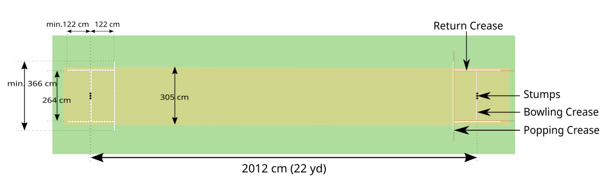

Cricket is a bat-and-ball game that is played between two teams of eleven players on a field, at the centre of which is a 22-yard (20-metre; 66-foot) pitch with a wicket at each end, each comprising two bails (small sticks) balanced on three stumps. Two players from the batting team, the striker and nonstriker, stand in front of either wicket holding bats, with one player from the fielding team, the bowler, bowling the ball towards the striker's wicket from the opposite end of the pitch. The striker's goal is to hit the bowled ball with the bat and then switch places with the nonstriker, with the batting team scoring one run for each of these exchanges. Runs are also scored when the ball reaches the boundary of the field or when the ball is bowled illegally. The fielding team tries to prevent runs from being scored by dismissing batters (so they are "out"). Means of dismissal include being bowled, when the ball hits the striker's wicket and dislodges the bails, and by the fielding side either catching the ball after it is hit by the bat but before it hits the ground, or hitting a wicket with the ball before a batter can cross the crease line in front of the wicket. When ten batters have been dismissed, the innings (playing phase) ends and the teams swap roles. Forms of cricket range from traditional Test matches played over five days to the newer Twenty20 format (also known as T20), in which each team bats for a single innings of 20 overs (each "over" being a set of 6 fair opportunities for the batting team to score) and the game generally lasts three to four hours. Traditionally, cricketers play in all-white kit, but in limited overs cricket, they wear club or team colours. In addition to the basic kit, some players wear protective gear to prevent injury caused by the ball, which is a hard, solid spheroid made of compressed leather with a slightly raised sewn seam enclosing a cork core layered with tightly wound string. The earliest known definite reference to cricket is to it being played in South East England in the mid-16th century. It spread globally with the expansion of the British Empire, with the first international matches in the second half of the 19th century. The game's governing body is the International Cricket Council (ICC)icc, which has over 100 members, twelve of which are full members who play Test matches. The game's rules, the Laws of Cricket, are maintained by Marylebone Cricket Club (MCC) in London. The sport is followed primarily in South Asia, Australia, New Zealand, the United Kingdom, Southern Africa, and the West Indies. Women's cricket, which is organised and played separately, has also achieved international standard. The most successful side playing international cricket is Australia, which has won eight One Day International trophies, including six World Cups, more than any other country, and has been the top-rated Test side more than any other country
Players
Each team has 11 players, including a captain. Before the match, each captain nominates their players to an umpire in writing. A player can't be replaced without the other captain's consent.

Pitch
The pitch is 22 yards long. The stumps are 22 inches high with a 6-inch bail. The ball weighs between 5 and 6 ounces.
Bowling
The bowler bowls from one end of the pitch, and the fielding side changes ends after every six balls. This is called an over. The bowler can't bowl two overs in a row, but they can bowl alternate overs from the same end.
Batting
The batsman tries to hit the ball and score runs before getting out. The fielding team tries to get the batsman out.
Scoring
After a ball is hit, the batsman and non-striker run from their wickets to the other as many times as possible to score runs.
Umpires
The umpires have a lot of discretion and are the sole judges. They must allow two minutes for a new batsman to arrive and ten minutes between innings.
Signals
The umpires use hand signals to communicate. For example, to signal "short run", the umpire at the end where the short running occurs makes a signal.